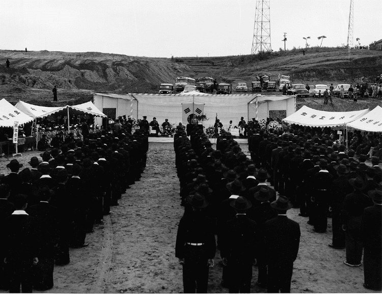

인하대, 이승만 동상 복원위 출범식·김문수 워크숍 모두 '불허'
조건 어긴 주최 측에 워크숍 대관 취소…주최 측은 후문 집회 신고
1954년 기록 속 설립 재원은 하와이 동포 성금·국민 성금·인천시 땅
AI경제저널=김갑봉 기자 | 인하대학교가 14일 교내에서 열릴 예정이던 '인하대 이승만 동상 복원위원회' 출범식과 김문수 전 고용노동부 장관 초청 청년리더십 워크숍을 모두 불허했다. 행사를 주관한 학생 소모임 '인하정신'은 학교 후문 밖에서 집회 신고를 하고 출범식을 열겠다고 밝혔다.

출범식 이어 워크숍까지 불허
인하대는 앞서 안전사고 우려를 이유로 출범식 대관을 불허했다. 워크숍은 처음 낸 행사 목적과 내용 범위 안에서만 연다는 조건을 붙여 대관을 승인했다. 충돌이나 안전 문제가 생기면 곧바로 행사를 멈추겠다는 뜻도 주최 측에 알렸다.
워크숍은 '2026 모던 스테이츠맨십 아카데미 6기' 과정으로 잡혀 있었다. 주최는 사단법인 파파미, 공동주관은 인하정신과 자유민주시민회의다. 김문수 전 장관과 김용삼 펜앤마이크 대기자, 김승욱 중앙대 명예교수, 박충권 국민의힘 국회의원이 강사로 나설 예정이었다.
오전 10시부터 오후 5시 30분까지 만 30세 미만 청년 40명을 참가비 2만원에 받기로 했다.
그런데 주최 측이 출범식도 열려는 움직임을 보이자 인하대는 11일 회의를 열었다. 학교는 이를 승인 조건 위반으로 보고 워크숍 대관까지 불허했다. 인하대 관계자는 주최 측이 조건을 어긴 것으로 보고 결정했다고 설명했다. 이로써 14일 교내에서 열기로 한 두 행사는 모두 취소됐다.
교내 대신 후문 밖 출범식 예고
인하정신은 교내 개최가 무산되자 장소를 인하대 후문으로 바꾸고 경찰에 집회 신고를 했다고 밝혔다. 인하정신은 재학생 5명이 꾸린 모임이다. 동문과 시민의 모금으로 내년까지 동상을 옛 자리에 다시 세우겠다고 했다.
인하정신은 1979년 교내에 세운 이승만 동상을 1980년대 운동권이 끌어내렸다고 설명한다. 진보당 인천시당 청년위원회는 교내에 복원 반대 대자보를 붙이고, 인하대가 4·19혁명에 함께했고 1984년 학생들이 동상을 철거한 학교라고 밝혔다.
1954년 문교부 담화가 꼽은 재원
인하정신은 "인하대 설립자는 이승만"이라고 주장한다. 인하대 공식 연혁 「인하대학교의 발자취」는 1952년 이승만 대통령이 하와이 교포 이주 50주년 기념사업으로 공과대학 설립을 발의했다고 적었다.
같은 연혁은 재원을 넷으로 꼽았다. 한인기독학원을 처분한 대금, "하와이 교포들의 정성어린 성금", 국내 유지의 성금, 국고 보조다. 여기에 인천시가 교지를 기증했다. 재단법인 인하학원은 1954년 2월 5일 인가를 받았고, 인하공과대학은 그해 4월 24일 문을 열었다.
김법린 문교부 장관은 인가 사흘 뒤인 1954년 2월 8일 담화 「인하공과대학 설립절차를 마치고」를 냈다. 담화는 재단의 출발점으로 "하와이 동포들의 눈물겨운 기부금 15만불"과 정부보조금 100만달러, 인천시가 기증한 교지 12만여평을 꼽았다.
하와이 노동자의 돈과 국민 성금, 인천시 땅
이영호 인하대 사학과 교수는 2001년 『기록학연구』에 실은 논문 「하와이 이민과 '인하공과대학'의 설립」에서 이 재원을 하나씩 짚었다.
논문을 보면 한인기독학원의 뿌리는 하와이 이민자들이 자녀 교육을 위해 1906년 세운 한인기숙학교다. 이승만은 1913년 교장을 맡았고 1918년 한인기독학원을 열었다.
이 교수는 학원의 설립과 교사·기숙사 건축, 운영비가 "주로 하와이 교포들의 재정적 후원에 의존한 것"이었다고 썼다.
1923년에는 학원 학생 고국방문단이 국내에서 약 3600달러를 모으기도 했다. 학원은 1947년 해체됐고, 부지를 판 대금 15만달러가 인하공대 기본금이 됐다. 이 교수는 이승만이 하와이 농민과 노동자에게서 돈을 모아 교육기관 운영비와 민족운동 자금을 마련했다고 썼다.
이승만 대통령도 1954년 10월 7일 개교기념식 치사에서 이 돈을 "그 가난한 농장에서 번 돈"이라고 했다. 학교 이름 '인하'는 인천과 하와이에서 한 글자씩 땄다고 밝혔다.
국내 모금은 1953년 3월 조직된 설립기성위원회가 맡았다. 정부 부처와 지방자치단체 공무원 봉급에서 5%씩 거둔 돈이 103만여환이었고, 기업체 등이 2734만여환을 냈다. 인천시장은 시유지 12만5173평을 내놓았다. 이 교수는 하와이로 가는 이민선이 인천에서 떠났다는 점이 학교 터를 인천으로 정한 까닭의 하나라고 분석했다.
이 교수는 인하공대 설립 뒤에 하와이 교포와 1950년대 국내 일반 국민의 성금이 있었다고 분석했다.
4·19 전통 내세운 연서명과 14일 후문
재학생·졸업생·교수가 발의한 '극우에 반대하는 인하대 사람들'은 행사 반대 연서명을 받고 있다. 이들은 연서명 문안에서 인하대를 "1960년 4·19혁명 당시 이승만 독재 정권에 맞서 민주주의를 외쳤던 인천 지역 민주화 운동과 역사를 함께해 온 대학"이라고 했다.
이들은 또 "청년을 위한답시고 내란을 옹호하고 군사 독재를 미화하는 극우 행사를 우리는 허락할 수 없다"고 밝혔다. 서명 결과는 온라인과 교내 대자보로 공개한다.
인하정신이 예고한 출범식 날은 14일(토)이고, 장소는 인하대 후문 밖이다.
참고문헌
- 이영호(2001). 「하와이 이민과 '인하공과대학'의 설립」. 『기록학연구』 3, 139~177. 한국국가기록연구원. https://doi.org/10.20923/kjas.2001.3.139 (원문 인하대학교박물관 https://museum.inha.ac.kr/bbs/museum/3213/105993/download.do)
- 인하대학교(2022). 「인하대학교의 발자취」. https://www.inha.ac.kr/sites/kr/files/2022/01%20%EC%9D%B8%ED%95%98%EB%8C%80%ED%95%99%EA%B5%90%EC%9D%98%20%EB%B0%9C%EC%9E%90%EC%B7%A8.pdf
- 인하대학교(2015). 「인하대학교의 발자취」. 『2015 대학안내』, 10~25. https://www.inha.ac.kr/sites/kr/files/2015_inha_01.pdf
- 인하대학교(2023). 『2023 인하대학교 새내기 대학생활 안내』. https://www.inha.ac.kr/sites/kr/files/2023/2023%20%EC%9D%B8%ED%95%98%EB%8C%80%ED%95%99%EA%B5%90%20%EC%83%88%EB%82%B4%EA%B8%B0%20%EB%8C%80%ED%95%99%EC%83%9D%ED%99%9C%20%EC%95%88%EB%82%B4.pdf
[사진 출처]
- [사진1] 공유마당 「인하공대 개교식 연설」(한국정책방송원, 1954.10.6, 공공누리 제1유형, UCI G905-13070835) https://gongu.copyright.or.kr/gongu/wrt/wrt/view.do?wrtSn=13070835&menuNo=200023
관련기사
- 12·3내란 옹호 김문수 인하대 특강 '발칵'…"극우 행사 반대"
- 인하대 해양전문대학원, 지금 만들면 된다
- [인천해양산업, 생존기로⑥] 인천 해양대, 법이 막고 해수부가 외면
- [인천해양산업, 생존기로⑤] 경인경제권, 해양대학이 없다
저작권자 © AI경제저널 무단전재 및 재배포, AI학습 및 활용 금지